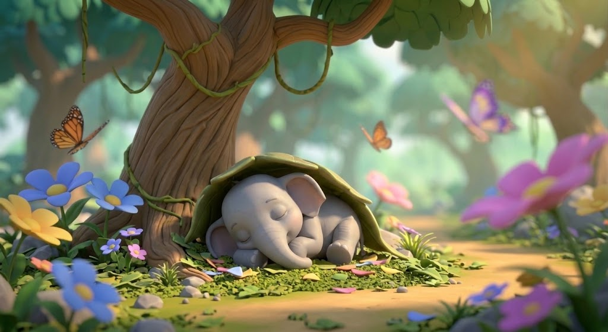
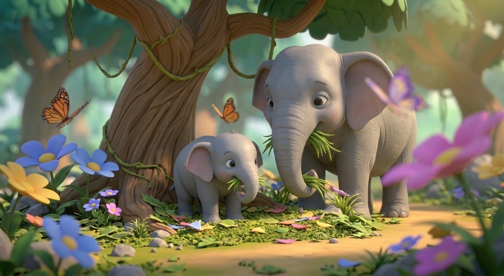

🎬 Pengenalan Misi Jumbo
Jom tonton video pengenalan misi serta ayat tunggal dan ayat majmuk sebelum memulakan permainan.
Tekan ▶ untuk mula. Sambungan internet diperlukan untuk memainkan video YouTube.
🌐 Buka video terus di YouTube jika pemain tidak dapat dimuatkan.
🚨 AMARAN HABITAT TERANCAM
Jumbo perlukan bantuan kamu! Habitatnya rosak dan dia mencari tempat yang selamat.
🌿 Tiga langkah misi
Dengar arahan untuk mengetahui cara bermain.
Udara, sungai dan hutan terancam.
Ayat tunggal dan ayat majmuk.
Bersihkan, lindungi dan tanam semula.
🗺️ PETA PEMULIHAN RIMBA
Pilih misi yang bercahaya. Lengkapkan misi mengikut turutan.
♻️ Bersihkan Sungai Jumbo
Asingkan sampah mengikut tong yang betul. Pilih satu sampah, kemudian pilih tongnya.
🌊 Sampah di sungai
💡 Ayat tunggal mempunyai satu cerita. Ayat majmuk mempunyai dua cerita yang digabungkan.
🏭 Tutup Corong Asap
Pilih satu corong kilang, kemudian padankan dengan penapis yang mempunyai jenis ayat yang sama.
🏭 Corong kilang berasap
AYAT TUNGGAL
AYAT TUNGGAL
AYAT MAJMUK
AYAT MAJMUK
🌿 Penapis corong
💡 Corong ayat tunggal dipadankan dengan penapis B atau D. Corong ayat majmuk dipadankan dengan penapis A atau C.
🌱 Kenali Ayat Majmuk
Kenal pasti ayat majmuk. Pilih anak pokok yang sihat dan tanam ke dalam tiga lubang kecil.
🌱 Tiga lubang kecil
kosong
kosong
kosong
🌿 Pilih anak pokok yang sihat
💡 Ayat majmuk mempunyai dua perbuatan yang digabungkan dengan “dan”.
😴 Jumbo Sedang Tidur
Lihat gambar, kemudian susun kad perkataan untuk membina ayat tunggal.

Jumbo berehat di bawah pokok.
💡 Gambar menunjukkan satu perbuatan sahaja, jadi bina ayat tunggal.
🐘 Jumbo dan Ibunya
Gabungkan dua ayat tunggal berdasarkan gambar. Susun kad perkataan mengikut urutan.

Jumbo dan ibunya sedang makan rumput.
Ayat 2: Ibu Jumbo sedang makan rumput.
💡 Gabungkan dua ayat tunggal dengan kata hubung “dan”.
🐘 STATUS PEMULIHAN JUMBO
🌳 Rimba menunggu tindakan kamu!
Lengkapkan semua misi untuk mengembalikan Jumbo ke habitat yang selamat.